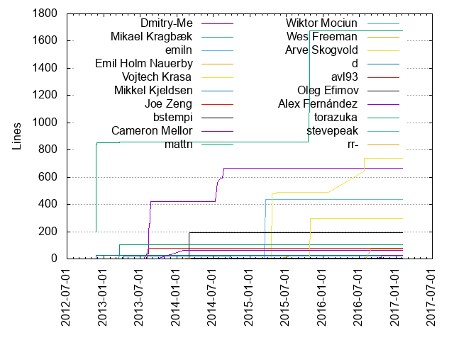
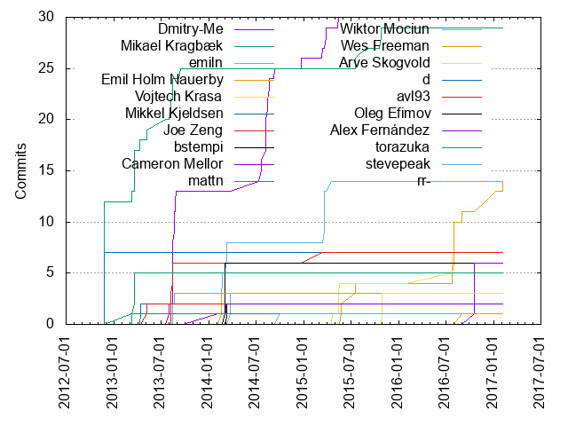

Authors
| Author | Commits (%) | + lines | - lines | First commit | Last commit | Age | Active days | # by commits |
|---|
| Dmitry-Me | 30 (18.63%) | 667 | 185 | 2013-08-02 | 2015-05-16 | 652 days, 2:23:00 | 18 | 1 |
| Mikael Kragbæk | 29 (18.01%) | 1673 | 3079 | 2012-11-23 | 2015-10-26 | 1066 days, 17:51:01 | 17 | 2 |
| emiln | 14 (8.70%) | 438 | 204 | 2013-08-13 | 2015-04-19 | 614 days, 3:29:44 | 7 | 3 |
| Emil Holm Nauerby | 14 (8.70%) | 23 | 1 | 2015-05-26 | 2017-02-04 | 619 days, 17:58:50 | 8 | 4 |
| Vojtech Krasa | 7 (4.35%) | 738 | 448 | 2015-04-22 | 2016-07-26 | 460 days, 23:08:49 | 5 | 5 |
| Mikkel Kjeldsen | 7 (4.35%) | 28 | 557 | 2012-11-24 | 2012-11-25 | 16:02:54 | 2 | 6 |
| Joe Zeng | 7 (4.35%) | 80 | 44 | 2013-08-07 | 2015-03-12 | 582 days, 2:40:38 | 4 | 7 |
| bstempi | 6 (3.73%) | 193 | 16 | 2014-03-04 | 2014-03-05 | 15:10:45 | 2 | 8 |
| Cameron Mellor | 6 (3.73%) | 24 | 59 | 2016-10-19 | 2016-10-20 | 18:49:00 | 2 | 9 |
| mattn | 5 (3.11%) | 105 | 0 | 2013-03-11 | 2013-03-19 | 7 days, 5:14:09 | 2 | 10 |
| Wiktor Mociun | 3 (1.86%) | 3 | 3 | 2014-03-25 | 2014-03-25 | 1:02:46 | 1 | 11 |
| Wes Freeman | 3 (1.86%) | 7 | 1 | 2014-02-18 | 2014-02-18 | 0:07:32 | 1 | 12 |
| Arve Skogvold | 3 (1.86%) | 294 | 2 | 2015-10-30 | 2015-10-30 | 1:50:37 | 1 | 13 |
| d | 2 (1.24%) | 21 | 7 | 2013-04-12 | 2013-04-12 | 0:07:20 | 1 | 14 |
| avl93 | 2 (1.24%) | 2 | 2 | 2013-05-07 | 2013-05-07 | 0:00:37 | 1 | 15 |
| Oleg Efimov | 2 (1.24%) | 5 | 2 | 2014-03-12 | 2014-03-12 | 0:01:55 | 1 | 16 |
| Alex Fernández | 2 (1.24%) | 65 | 65 | 2014-02-03 | 2014-03-07 | 31 days, 22:11:49 | 2 | 17 |
| torazuka | 1 (0.62%) | 1 | 1 | 2013-03-11 | 2013-03-11 | 0:00:00 | 1 | 18 |
| stevepeak | 1 (0.62%) | 23 | 1 | 2014-10-03 | 2014-10-03 | 0:00:00 | 1 | 19 |
| rr- | 1 (0.62%) | 71 | 29 | 2016-09-01 | 2016-09-01 | 0:00:00 | 1 | 20 |
These didn't make it to the top: rheber, cmccall, Willem Mulder, Tim Kellogg, Thomas Rooney, Steve Peak, Stephen Beitzel, Sergey A. Savenko, Ryan Haining, Pete Haughie, Ollie, Kristian Perkins, Julian Wachholz, Harrison Gentry, George Kankava, Dennis Mojado
Only top 20 authors shown
Only top 20 authors shown
| Month | Author | Commits (%) | Next top 5 | Number of authors |
|---|
| 2017-02 | Tim Kellogg | 1 (50.00% of 2) | Emil Holm Nauerby | 2 |
| 2017-01 | Emil Holm Nauerby | 1 (100.00% of 1) | | 1 |
| 2016-11 | Emil Holm Nauerby | 1 (100.00% of 1) | | 1 |
| 2016-10 | Cameron Mellor | 6 (100.00% of 6) | | 1 |
| 2016-09 | rr- | 1 (50.00% of 2) | Emil Holm Nauerby | 2 |
| 2016-08 | Emil Holm Nauerby | 5 (100.00% of 5) | | 1 |
| 2016-07 | Vojtech Krasa | 3 (75.00% of 4) | Emil Holm Nauerby | 2 |
| 2016-01 | George Kankava | 1 (100.00% of 1) | | 1 |
| 2015-11 | Pete Haughie | 1 (100.00% of 1) | | 1 |
| 2015-10 | Arve Skogvold | 3 (50.00% of 6) | Mikael Kragbæk, Kristian Perkins | 3 |
| 2015-08 | Mikael Kragbæk | 1 (100.00% of 1) | | 1 |
| 2015-07 | Emil Holm Nauerby | 2 (66.67% of 3) | Mikael Kragbæk | 2 |
| 2015-05 | Vojtech Krasa | 3 (37.50% of 8) | Emil Holm Nauerby, cmccall, Thomas Rooney, Dmitry-Me | 5 |
| 2015-04 | emiln | 1 (50.00% of 2) | Vojtech Krasa | 2 |
| 2015-03 | emiln | 5 (55.56% of 9) | Dmitry-Me, Joe Zeng | 3 |
| 2014-12 | rheber | 1 (50.00% of 2) | Dmitry-Me | 2 |
| 2014-10 | stevepeak | 1 (50.00% of 2) | Steve Peak | 2 |
| 2014-09 | Ryan Haining | 1 (50.00% of 2) | Dmitry-Me | 2 |
| 2014-08 | Dmitry-Me | 8 (88.89% of 9) | Ollie | 2 |
| 2014-07 | Dmitry-Me | 3 (100.00% of 3) | | 1 |
| 2014-03 | bstempi | 6 (40.00% of 15) | emiln, Wiktor Mociun, Oleg Efimov, Alex Fernández | 5 |
| 2014-02 | Wes Freeman | 3 (50.00% of 6) | emiln, Alex Fernández | 3 |
| 2013-09 | Stephen Beitzel | 1 (33.33% of 3) | Mikael Kragbæk, Dennis Mojado | 3 |
| 2013-08 | Dmitry-Me | 13 (48.15% of 27) | Joe Zeng, Mikael Kragbæk, emiln, Willem Mulder | 5 |
| 2013-07 | Mikael Kragbæk | 1 (100.00% of 1) | | 1 |
| 2013-05 | avl93 | 2 (66.67% of 3) | Mikael Kragbæk | 2 |
| 2013-04 | d | 2 (50.00% of 4) | Mikael Kragbæk, Harrison Gentry | 3 |
| 2013-03 | mattn | 5 (38.46% of 13) | Mikael Kragbæk, torazuka, Sergey A. Savenko, Julian Wachholz | 5 |
| 2012-11 | Mikael Kragbæk | 12 (63.16% of 19) | Mikkel Kjeldsen | 2 |
| Year | Author | Commits (%) | Next top 5 | Number of authors |
|---|
| 2017 | Emil Holm Nauerby | 2 (66.67% of 3) | Tim Kellogg | 2 |
| 2016 | Emil Holm Nauerby | 8 (42.11% of 19) | Cameron Mellor, Vojtech Krasa, rr-, George Kankava | 5 |
| 2015 | emiln | 6 (20.00% of 30) | Vojtech Krasa, Mikael Kragbæk, Emil Holm Nauerby, Dmitry-Me, Arve Skogvold | 11 |
| 2014 | Dmitry-Me | 13 (33.33% of 39) | bstempi, emiln, Wiktor Mociun, Wes Freeman, Oleg Efimov | 12 |
| 2013 | Mikael Kragbæk | 13 (25.49% of 51) | Dmitry-Me, Joe Zeng, mattn, emiln, d | 14 |
| 2012 | Mikael Kragbæk | 12 (63.16% of 19) | Mikkel Kjeldsen | 2 |
| Domains | Total (%) |
|---|
| gmail.com | 35 (21.74%) |
|---|
| kragbaek.com | 29 (18.01%) |
|---|
| nauerby.com | 27 (16.77%) |
|---|
| yandex.ru | 20 (12.42%) |
|---|
| users.noreply.github.com | 10 (6.21%) |
|---|
| joezeng.com | 7 (4.35%) |
|---|
| cameronmellor.net | 6 (3.73%) |
|---|
| skeweredrook.com | 3 (1.86%) |
|---|
| stevepeak.net | 2 (1.24%) |
|---|
| statoil.com | 2 (1.24%) |
|---|